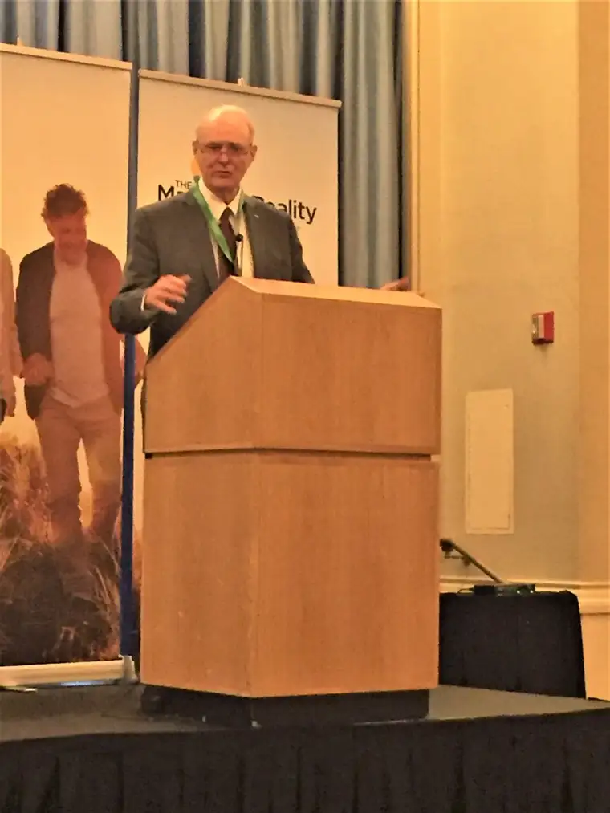
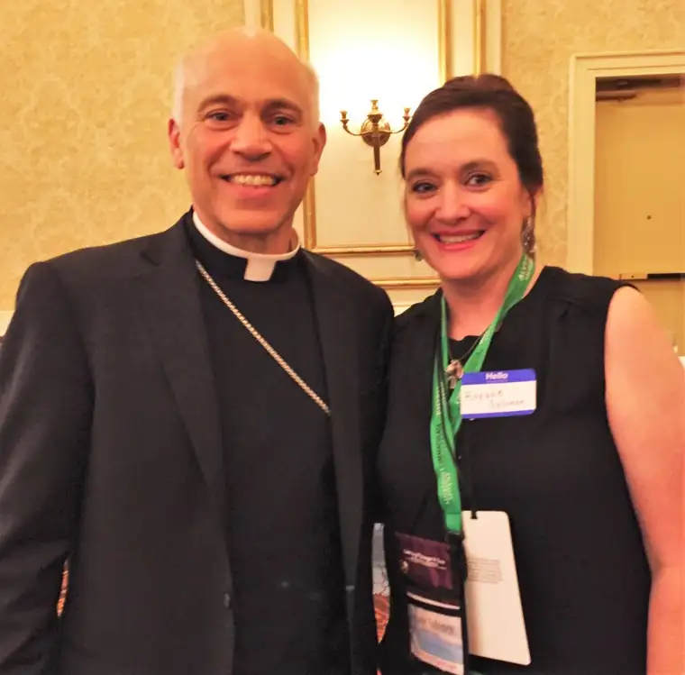
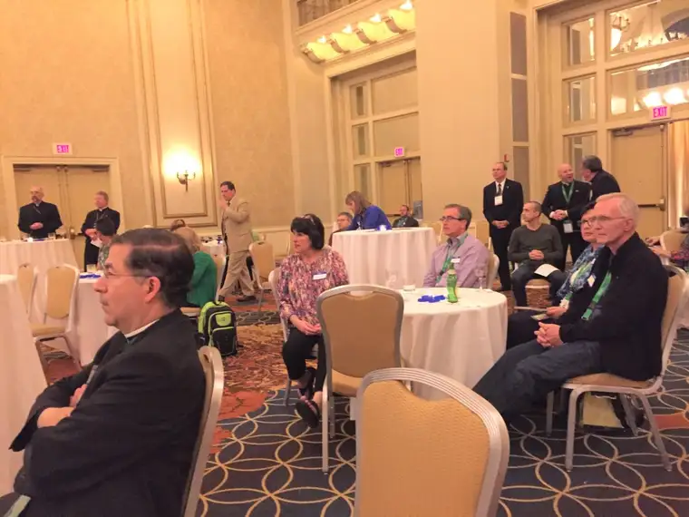
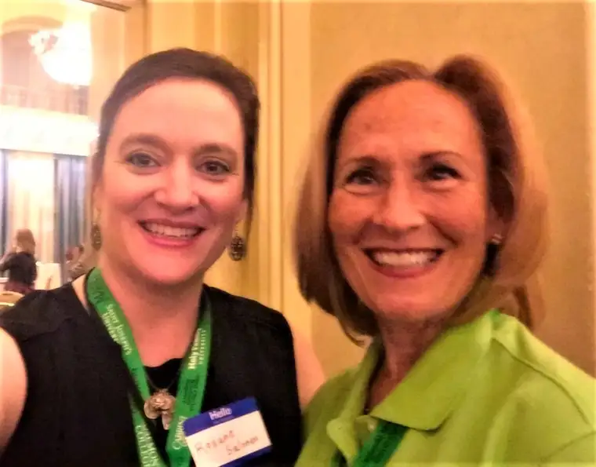
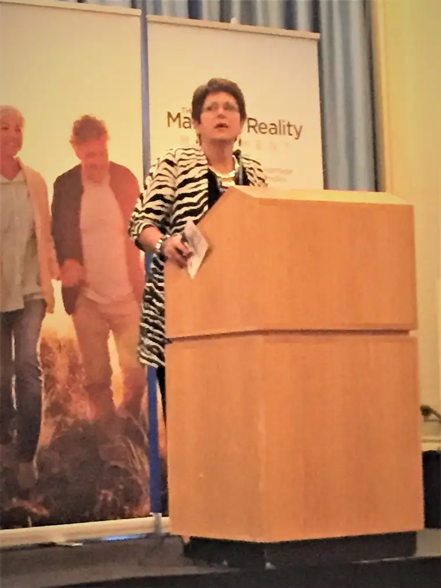

Our collaboration began in late 2012, after I came across his little, award-winning book on marriage. The book, so small in size but so large in vision, had come into my hands without my pursuit, yet at exactly the moment I needed it. And it had been transforming to me in that moment, and beyond.
Bill had found this post I wrote about discovering his book, and emailed me. From there, a collaboration developed. He was working on some new projects and needed an understanding set of eyes to take a look and offer editing tips. I was glad to help, because I could see early on just how significant his work was, how prophetic even, and I was honored to be even a small part of it.
The work we undertook together happened from afar, and by email, phone conversation, or conference call. His keen insight was unusual, and I saw early on that he would become a mentor. Even in the past couple years, when I had to pause from the work to focus on other matters, I would come across a question from time to time and seek his thoughts. I never failed to learn something new.
In 2015, Bill launched the Marriage Reality Movement, and I was blessed to be at the launch of this exciting development, which happened during the World Meeting of Families in Philadelphia.

It was an invigorating and special experience to be there, along with other supporters of Bill’s great work helping the culture understand the value of marriage as seen through the eyes of children, and promoting the common good in general – steeped in reality, revealed in the Church’s teaching, and able to be known and understood through natural reasoning.

Included at the launch were Fr. Frank Pavone of Priests for Life, second to left; and Astrid Bennett Gutierrez, far right

Father Frank Pavone and others at the Marriage Reality Movement launch 
Roxane and Coleen Kelly Mast

I last reached out to Bill at the end of the March, and he sent a lively response. So the news of his death came as a shock, and I have been grieved since hearing it; stunned to know that my earthly time with this mentor is no more.
Along with his prophetic insight, Bill was a man of deep faith. Each conference call I joined at his leading began and ended with prayer. He was especially fond of the Memorare.
But my very favorite exchange with Bill happened by “accident,” when, on airplane back from Philadelphia, we were seated near one another.

Since I was traveling back to North Dakota and he, to California, this seemed most unusual, and yet, after switching seats with someone and having a whole flight to chat, we had the most edifying and touching conversation. Through this “chance” meeting on a plane, we suddenly became not just colleagues, but a brother and sister in Christ sharing some of our deepest challenges living out this life of faith. I also got to hear the story of how he came to be so passionate about marriage, and what a story that was!
It became clearer than ever that God had tapped Bill very purposefully; that he sought him out to use him for his glory, and to bring people to Christ. Which is why my heart sank at the news that on May 1, just a day before my own husband’s open-heart surgery, Bill underwent a critical open-heart surgery as well, and never recovered. With the complicating factor of a lung disease, too, it was too much for his body to take, and Bill left his earthly home, Heaven-bound, on May 11, just a few days after we returned from Mayo. From earthly perspective, this has come much too early. It doesn’t make sense. It’s a jolt and deep sadness. Someday, we will understand just why God allowed him to come Home at this time. For now, we are left with the shock.
I truly treasured this man and his great passion to do God’s will, despite all the obstacles set on his path. I pray that I can be part of an effort to keep his work alive and moving forward. It is deserving; his tireless efforts must not be in vain.
But there’s no doubt in my mind and those close to Bill that he fought the good fight, and so, I feel strongly he is with Our Lord now, wrapped in the love of Our Blessed Mother, and that someday, if I am so fortunate, I will see him once again.
“I have fought the good fight, I have finished the race, I have kept the faith. Now there is in store for me the crown of righteousness, which the Lord, the righteous Judge, will award to me on that day—and not only to me, but also to all who have longed for his appearing.” (2 Tim 4:7-8)
If you wouldn’t mind, could you lift up the soul of this dear man in prayer? Especially tomorrow, May 23, the day of his funeral, when he will be formally presented to God at his funeral Mass in California?
May the perpetual light shine upon him…
My blog posts that came from my time with Bill: